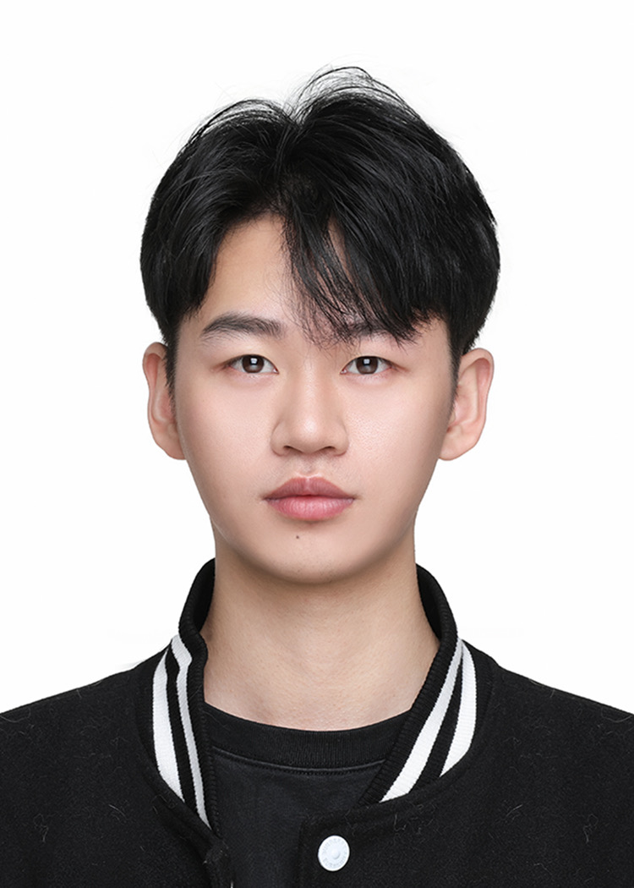

负责 InsMind AI+ 智能创作平台前端架构与核心功能开发，包括 AI Agent 对话系统、多模态工具链（抠图/绘图/SAM 智能选区/视频生成）、PixiJS 无限画布渲染引擎及编辑器基座化架构；负责稿定设计/花瓣网/稿定 AI 社区全站搜索推荐系统与 Monorepo 工程化建设；主导落地页 SSR/SEO 体系、多支付接入与研发提效工具（GitLab MCP、国际化、图标管理）。
负责跨境电商逆向物流系统（淘海外/淘日本）前端架构设计与核心业务开发，包括退货预约、仓库工作台、组件库建设与 SSR 性能优化；负责羚羊 AI 智能客服工作台的视频通话系统与 AI 助手前端开发，覆盖 WebRTC 实时通信、IM 协议扩展与 Agent 配置平台。
独立负责 TMM 实时聊天软件（Electron 桌面端）全链路开发，包括 IM 消息系统、WebSocket 实时通信、大文件传输（S3 分片上传）、本地存储与搜索、富文本编辑器扩展；并负责后台管理系统、H5 及官网的开发与维护。
业务背景：InsMind是全球化的AI图像与视频创作平台，聚焦风格化AI内容生成，覆盖亚洲、欧美等多个核心市场。项目包含AI+智能设计编辑器（AI对话、AI抠图、AI改图、AI视频生成等）和国际化产品体系（落地页系统、SEO优化、多支付方式接入），通过自然语言对话降低设计门槛。巅峰MAU超1500万，单月新增用户1200万+，成为全球化AI创作平台标杆。
AI Agent对话系统：主导前端消息流转系统架构设计，基于Qwen-Agent框架集成豆包/GPT大模型，采用三层架构（展示层/业务层/服务层）深度集成Dify Agent工作流。实现三种Agent工作模式：对话模式、图片生成ReAct架构、视频生成状态图编排。核心优化：消息缓冲队列保证高并发下消息有序处理；SSE流式推送 + TransformStream分段JSON解析实现12种消息类型实时渲染；设计InterruptManager中断恢复机制，实现工具级断点续传。
AI工具链集成：（1）AI抠图/绘图/变清晰：基于Dify搭建工作流管线接入多模态大模型实现；（2）AI智能选区/换背景：集成Meta SAM模型实现智能图像分割，双Canvas架构（蒙版存储+交互预览），RLE编码解析 + 内阴影描边算法实现高亮边框；（3）图片压缩/格式转换：WASM加载MozJPEG(C++)/ImageQuant(Rust)算法，纯前端实现压缩率80%+；（4）AI视频生成：独立负责从0到1落地（文生视频/图生视频/视频特效），对接Dify工作流动态获取模型配置，利用指数退避算法优化轮询频率 + 超时熔断机制保障服务稳定性，实现进度实时追踪与异常恢复。
无限画布渲染引擎：参与基于PixiJS WebGL的三层渲染架构开发（Surface/Viewport/Processor），实现虚拟化渲染（只渲染视口内元素）+ 对象池复用 + 懒加载纹理 + 脏矩形检测 + LOD分级，支持万级元素60fps流畅渲染。对接拖拽、缩放、旋转等核心编辑功能，实现撤销/重做系统。
编辑器基座化架构：借鉴VSCode扩展系统设计多产品共享的编辑器基座。核心设计：（1）三层架构（逻辑层→UI层→应用层）严格分层访问；（2）Token系统实现类型安全的依赖注入，Manifest声明依赖+拓扑排序自动编排；（3）五阶段插件生命周期（Load→Register→Bootstrap→Run→Unmount），支持按需加载与热插拔。多租户配置驱动差异化支持多产品。消除15000+行重复代码，新产品开发周期缩短55%，代码复用率85%+。
落地页系统与SSR/SEO优化：采用"配置驱动+组件化+SSR"架构，基于@web-widget框架实现Vue 3 + React混合SSR渲染，开发30+可复用组件库，运营人员通过CMS零代码配置页面。SSR架构：用户请求→CDN/边缘节点→BFF层（鉴权/AB实验/缓存检查）→Meta SSR服务（渲染HTML+生成缓存数据）→客户端水合。核心目标是自然流量增长：自动生成7种Schema.org结构化数据 + Hreflang多语言架构（18种语言）；四层缓存架构（浏览器→CDN→Redis→OSS）；实施HTTP缓存策略（Cache-Control/ETag/stale-while-revalidate）优化TTFB和首屏渲染速度。
多支付方式接入：设计三层支付架构（前端收银台→支付核心层→支付网关），集成Stripe/PayPal/Payssion（13种区域支付），实现支付状态轮询 + GA/Yandex/Meta转化上报。独立交付多币种多语言PDF账单系统。
业务背景：稿定设计是全场景在线视觉设计平台（累计用户超1亿，月活跃用户数千万级），花瓣网是中国领先的创意设计灵感与图片素材平台（日访问量千万级，月访问量数亿级，累计素材采集超数十亿次），稿定AI社区是更懂设计师的AI创意社区。负责三大产品全站搜索推荐系统开发，同时参与前端Monorepo超级仓库的架构设计与实施。
搜索推荐系统：负责搜索全链路前端实现——搜索引导层（搜索底纹词/历史搜索词/搜索热词/下拉联想词）→ 搜索理解层（分词/同义词近义词下位词/意图识别/标签权重/主文案提取）→ 召回层（热点池召回/新品池召回/BM25+LR文本召回/向量个性化召回）→ 排序层（多目标模型排序）→ 策略层（VIP模板置顶/过气热点打压/同套系打压）。实现灵感词推荐系统（共现词算法+触发策略）、搜索底纹词（热度召回+个性化推荐），提升用户探索效率和内容消费深度。维护花瓣网搜索推荐，支持素材搜索、采集搜索、以图搜图等场景。
全链路监控与数据分析：接入ABTest实验平台进行用户行为分析，搭建全链路监控体系（性能监控+异常采集+埋点上报）。建设素材下载转化率统计系统，持续优化CTR、UV CTR、付费转化等核心指标。
端一体化与性能优化：主导CSS Token化工程实现，将UI设计规范（色彩/字体/间距/圆角等）通过Design Token转化为可复用的CSS变量体系，确保Web/移动端/桌面端视觉一致性。接入importmap工具wpm实现外部依赖动态加载和版本管理，配置CDN加速 + HTTP缓存策略，Core Web Vitals全部达标。
Monorepo大仓建设：参与前端Monorepo大仓架构建设，基于pnpm Workspace构建多包工作空间，通过硬链接机制实现依赖去重与磁盘空间优化。集成Turbo构建引擎实现增量构建与智能并行执行，配合Catalog统一管理45+依赖版本。设计7-Stage CI/CD流程（bot→check→test→changeset→deliverable→deploy→verify），Pipeline耗时从30min优化至12min，缓存命中率85%+。
研发提效工具：（1）GitLab MCP：基于MCP协议实现AI代码审查 + MR描述自动生成；（2）国际化工程：设计全链路自动化管理方案，CLI工具支持基于AST语法树提取文案、维格表双向同步、集成AI翻译引擎生成18种语言，Runtime运行时库提供动态语言切换与按需加载，形成"提取→翻译→同步→运行"闭环；（3）图标管理工程：自动拉取Figma/Iconfont设计稿并实时监听更新，生成React/Vue/Svelte多框架组件，内置Tree Shaking优化与TS类型定义，支持按需引入。
业务背景：阿里巴巴跨境电商逆向物流核心系统，服务淘海外、淘日本、香港本地退等多站点业务，日均处理1万+逆向物流订单，覆盖全球20+国家/地区。覆盖退货全链路：用户退货预约、跨境物流追踪、仓库签收质检、退款结算。负责前端架构设计与核心功能开发，从Rax迁移至ICE框架重构，主导组件库建设与SSR性能优化。
跨境退货业务系统：开发退货预约核心流程（商品选择→驿站配置→运费计算→支付确认），采用适配器模式设计业务组件，一套代码适配淘海外/淘日本/香港本地退三种场景。实现差异化支付架构（0元支付/微信/国际支付），通过策略模式动态切换支付渠道。设计低代码配置平台，服务端JSON Schema驱动页面生成，运营人员零代码配置新页面，需求迭代周期缩短50%+。
仓库工作台系统：开发仓库核心功能模块（商品签收/状态查询/数据导出/质检验收），处理复杂的状态机流转（待签收→质检中→已入库→已退款）。设计扫码枪硬件集成方案，通过事件监听+全局回调实现扫描数据实时处理，动态注入脚本完成打印机、扫描仪与前端页面的无缝通信。实现基于xlsx的大数据量导出，递归分页请求保障数据完整性，内存优化防止浏览器崩溃。设计Base64图片压缩管道，质检图片传输效率提升70%。
组件库与SSR架构：主导Odin-JP基础物料库建设，收敛分散组件为Monorepo架构（API/Hooks/Utils/UI），实现UI组件主题色动态配置，集成UnoCSS主题插件。基于Wormhole框架实施全链路SSR改造，结合React Suspense实现流式渲染与数据加载并行，FCP从1500ms优化至620ms（提升57%）。设计SSG骨架屏方案，通过SsgShimPlugin在Node环境模拟客户端变量，构建时预渲染骨架屏HTML解决白屏问题。
全链路监控与跨端优化：接入AEM埋点系统（点击/曝光/页面SPM）+ JSTracker异常采集，结合initMtop接口拦截实现问题快速追溯。通过Windvane桥接Native模块（半浮层/头部隐藏/下拉刷新）+ PHA容器能力，提升端内H5原生体验。结合ZCache + DataPrefetch数据预取，配合代码分割与路由级懒加载，优化首屏加载性能。
业务背景：阿里巴巴全渠道智能客服解决方案，服务电商与新零售业务，日均处理咨询量100万+，峰值并发1万+客服在线。覆盖服务全链路：服务前（智能路由/用户画像识别）、服务中（AI辅助回复/实时视频通话/工单处理）、服务后（会话质检/数据分析）。负责视频客服系统与AI智能助手的前端架构设计与核心功能开发。
实时视频通信系统：基于Agora RTC SDK构建WebRTC视频通信能力，设计客户端双端状态机架构（客服端Context+useReducer / 用户端Mobx响应式流），通过WebSocket实现信令同步与会话状态管理。实现多窗口渲染架构（主屏通话/侧边列表/悬浮小窗/画中画），支持窗口拖拽、最小化、多会话切换等交互。核心优化：（1）设备健康度预检（摄像头/麦克风权限+网络质量评分），前置拦截异常场景；（2）级联重连策略（网络抖动5秒内自动恢复+断线重连超时保护），通话异常率下降15%；（3）通话超时熔断（30秒无响应自动挂断+服务降级），保障系统稳定性。
AI智能助手系统：设计IM消息协议扩展，新增AI专属消息类型（chatAI闲聊/docAI文档解析/summaryAI会话总结/suggestAI回复建议），集成SSE流式渲染引擎实现AI回复逐字输出。开发智能轮询调度器，结合指数退避算法动态调整AI服务请求频率，降低大模型服务压力。搭建Agent-lab可视化配置平台，支持客服技能编排（拖拽式工作流）、话术模板动态绑定、知识库检索配置，实现"配置即上线"零代码部署。
客服效能优化：实现快捷回复系统（常用话术/商品卡片/订单查询一键发送），开发智能标签系统（用户意图识别+自动打标），集成会话摘要自动生成（AI总结+关键信息提取），客服平均响应时间缩短40%。
业务背景：对标土耳其版微信的跨平台实时聊天应用（Win/Mac），DAU超10万，土耳其用户覆盖率提升20%。独立负责PC端全链路开发，涵盖即时通讯、群聊管理、文件传输和搜索等核心功能，以及后台管理系统、H5及官网开发维护。
IM架构与消息系统：基于关注点分离原则，将聊天模块重构为五层架构（API→DB→Event→State→UI），通过依赖注入实现模块解耦。消息系统设计：（1）消息ID去重 + 服务端序列号排序，保障消息顺序一致性；（2）消息状态机流转（发送中→已发送→已送达→已读），实现已读回执与消息撤回；（3）虚拟滚动 + 分页加载历史消息，支持万级消息列表流畅渲染；（4）Mobx细粒度响应式更新，优化未读数/在线状态/会话列表等复杂状态同步，列表滚动流畅度提升60%。
实时通信与消息可靠性：基于WebSocket设计双向通信协议，心跳保活 + ACK确认机制保障消息必达。核心能力：（1）级联重连策略（网络抖动自动恢复+指数退避重试）；（2）离线消息队列补偿，断网期间本地缓存，恢复后增量同步；（3）基于CAP定理设计多端状态同步，解决会话状态（置顶/静音/已读）的多端冲突。消息到达率99.9%，延迟<100ms。
Electron桌面端能力：基于Electron主进程/渲染进程IPC通信架构，实现系统托盘常驻 + 消息通知推送 + 全局快捷键唤起。设计多窗口管理机制（主窗口/聊天窗口/设置窗口），通过electron-updater实现应用自动更新，支持Win/Mac双平台打包发布。
大文件传输与本地存储：基于AWS S3设计分片上传（5MB分片+并行+断点续传），支持GB级文件传输；流式下载+背压控制平衡内存与I/O吞吐量；LRU算法管理本地资源缓存。基于IndexDB设计本地搜索引擎，联合索引优化跨表查询，Web Worker分离搜索计算避免UI卡顿，万级数据检索<50ms。
富文本编辑器扩展：基于Quill Delta模型开发@提及插件，MutationObserver监听光标事件实现上下文感知，O(n)时间复杂度成员匹配，异或运算动态标记关联消息，支持@消息高亮与一键跳转。